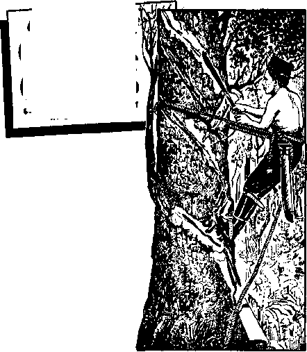

^iswering the Bible Critics
^atehood for Hawaii
^he Radio Telescope Sees the Universe
Ahrricanes in Martinique
v kwmhem
JUNE 22, latsy
THE MISSION OF THIS JOURNAL
Newt sources that are able to keep you awake to the vital Issues of our times must be unfettered by censorship and selfish interests. “Awakef" has no fetters. It recognizes facts, faces facts, is free to publish facts. It Is not bound by political ambitions or obligations; it is unhampered by advertisers whose toes must not be trodden on; it is unprejudiced by traditional creeds. This journal keeps itself free that it may speak freely to you. But it does not abuse its freedom. It maintains integrity to truth.
"Awakel" uses the regular news channels, but is not dependent on them. Its own correspondents are on ail continents, in scores of nations. From the four corners of the earth their uncensored, on-the-scenes reports come to you through these columns. This journal's viewpoint is not narrow, but is international. It is read in many nations, in many languages, by persons of all ages. Through its pages many fields of knowledge pass in review—government, commerce, religion, history, geography, science, social conditions, natural wonders—why, its coverage is as broad as the earth and as high as the heavens.
''Awakel” pledges itself to righteous principles, to exposing hidden foes and subtle dangers, to championing freedom for all, to comforting mourners and strengthening those disheartened by the failures of a delinquent world, reflecting sure hope for the establishment of a righteous New World.
Get acquainted with "Awake!" Keep awake by reading “Awakel"
■ti —n h । n • tti —— । tn ■
Published Simultaneously in the United States by the WATCHTOWER BIBLE AND TRACT SOCIETY OF NEW YORK, INC. 117 Adams Street Brooklyn 1, N, Y., U. S. A.
and in England by WATCH TOWER BIBLE AND TRACT SOCIETY Watch Tower House, The Ridgeway London N.W. 7t England
N. H. Knorr, President Grant Suiter, Sec ref ary
Printing this issue: 2,850,000
’Awake!” ii pillbh«d In ths following 19 language; Smimortthly-— Afrikaans, Danish. Dutch, English, Finnish, French, German, Greek, Italian, Japanese, Norwegian, Portuguese, Spanish. Swedish, Tagalog.
Monthly—CtnyanK Indonesian, Ukrainian, Zulu
Yearly suhsniption rates
Offm for semimonthly editions
Arearlca, U.S., 117 Adama St, Brooklyn 1, N.Y, $1 Australia, 11 Beretford Rd., gtnthfleld, N.8.W.
Canada, 150 Brtdgelacd Ave , Tdrotttn 19, Ont.
England, Watch Tower House,
Bev Zealand, 621 New North Bd„ Auckland, S.W. 17/-South Africa, Private Baf, Elandtfcnteln, TtI. T/-
McmttiJy editions eoat half the above rales.
4d a copy
ffetilttanets for siibscTlptlcms should be sent to the office In your countri,' Otherwise send your remittance to Tendon. Jtfotie* of expiration Is sent at least two 1wj before snbscriptfon expires.
CHARGES QF ADDRESS should reach >9 thirty day* befere yoir moving date. Give us your old and new address (If pouibla, yoir old address label). Watch Tower, Watch Tower Honta, The Ridgeway, London N.W. 7, England
Entcred as second-class matter at Brooklyn, N.Y. Printed in England
The Bible translation used in “Awaker” k the hew World Translation of the Holy Scclvtmu When other translation* are tued the follcnvlnt symbols will appear behind the citations;
AS — American Standard Version AT - An American Translation AF - Authorized Version (1611J Z)a >- J- N. Darby's version
— Pathol io Dou ay vertfon ED - The Emphatic Diaglctt JP - Jewish Publication Soc. Lt€ — Isaac Leeser's version
JWo — James Mnffact’s version J? ft — J. B. RotKrrhsm s version JSS - Revl-ed HlanuarJ Version Yg — Robert Touiig's version
|
Too Many People? |
3 |
An Appreciation of Ivory |
20 |
|
Answering the Bible Critics |
5 |
A Look at Morocco |
21 |
|
Ilie Earth: A Perpetual Show |
8 |
Hurricanes in Martinique |
24 |
|
Statehood for Hawaii |
9 |
Jehovah’s Witnesses in Contrast |
26 |
|
Life in the Chicle Camps |
13 |
“Your Word Is Truth” | |
|
The Radio Telescope Sees the |
Why Be a Minister? |
27 | |
|
Universe |
16 |
Watching the World |
29 |

with the problem of too many people. She has 650 million today, but experts estimate that she will have about one and a half billion some forty years from now. The annual addition to her population now is about fifteen million. World
DURING the past three centuries the human population has increased from about 500 million to more than 2,800,000,-000. Its rate of growth has not leveled off but is increasing. Some authorities predict a population of more than six billion in about forty years, with an annual addition, at that time, of some 126 million. The big question in their minds is how to slow this growth before the population reaches the point where there is not enough room and food.
India is keenly aware of this problem. She has a population of 406 million, with sever. mffiksn helwj W-'M hi .
This does not help her economic problems. Science News Letter of December 27,1958, stated: “If the present high rate continues and the death rate continues to decline, her population will almost double by 1986. Nearly 800,000,000 people would then live in an area about two-fifths the size of the United States. Such a great increase would more than wipe out any economic gains made under India’s present or future five-year plans.’’
China is the foremost nation confronted leaders are fearful of what will happen when China’s population compels her to look for more room.
Experts in world affairs can see nothing but trouble if the world’s population continues to grow at the present rate. The magazine Newsweek pointed out: “Two-thirds of the world’s population is underfed, and world agricultural production is not increasing. If the population curve continues to mount unchecked, deteriorating living conditions in India and elsewhere can only lead to explosions such as the world has never dreamed of.’’
W 'seems ’iTurhc Ynat there should ‘be a population crisis when there are vast uninhabited areas of the earth. If the billions spent on war weapons were used to develop these areas and to improve methods of food production and distribution there would be no reason to worry about several more billion people being added to the world’s population. But there are fears as well as national and racial barriers that stand in the way.
C'jhwvL'j.tv-dVi, hvVvVvt-i, vojuid 'ua vriiy a temporary solution. An article in Harper’s
Magazine pointed out: “Colonization never helps for more than a few generations, because the colonists breed more rapidly than the folk at home and soon fill up aJJ the empty spaces—as the classic example of the United States amply demonstrates.” Eventually there would not be enough room for everyone if the present rate of growth were to continue. The persons who advocate birth control^ a solution to the problem are faced with vigorous religious objections.
The persons who fear that the earth will eventually have too many people, despite the fact that death continues to take its yearly toll, are horrified when told that the time is coming when humans will not die. They envision the earth jammed with people. In spite of their fears eternal life is certain. Man’s Creator promised it, and he never goes back on a promise. “The gift God gives is everlasting life by Christ Jesus our Lord.” “The righteous themselves will possess the earth, and they will reside forever upon it.”—Rom. 6:23; Ps. 37:29.
The problems created today by an exploding population will not exist when God fulfills his promise. Earth's inhabitants will not be divided into nationalistic groups that cause heavy concentrations of people in certain areas. They will be one people under one government and will be free to spread over the earth. No racial or national barriers will stand in their way.
Since that righteous government will be the kingdom over which Christ was made King, the people will not suffer because of selfish human rulers. None will be starving while others have a great surplus of food stored away. There will no longer be any wasting of the earth’s resources. Under the wise leadership of that heavenly government man will make good use of the earth. It will produce an abundance for him. “The earth itself will certainly give its produce; God, our God, will bless us.”—Ps. 67:6.
Before those blessings are extended to all mankind God will destroy the present wicked system of things. This execution of divine judgment will cause a change in earth’s present population. The wicked will cease to be. “For evildoers themselves will be cut off, but those hoping in Jehovah are the ones that will possess the earth.” (Ps. 37:9) That will mean a marked reduction in the number of earth’s inhabitants, just as the flood of Noah’s day brought a marked reduction in the population of that time.
Those whom God preserves to be earthly subjects of his kingdom will proceed to fulfill the divine procreation mandate: “Be fruitful and become many and fill the earth.” (Gen. 1:28) It was for this purpose that God gave mankind the power of procreation in the first place. Because no one will be dying, that mandate will be carried to completion well within a period of one thousand years.
Filling or populating the earth does not mean to overcrowd it. When mankind will have increased to the point of making a token fulfillment of that mandate, leaving room for those yet to be raised from the memorial tombs, it is reasonable to conclude that man will cease to multiply. God’s purpose will have been fulfilled. He is just as capable of removing mankind’s fertility as he was of giving man the power of procreation in the beginning. The undying inhabitants of God’s new world will, therefore, never create a dilemma of too many people.
The meek ones themselves will possess the earth and they will indeed find their exquisite delight in the abundance of peace.—Ps. 37:11.

BIB li
THE Bible claims to be the revealed word of the Creator, Jehovah God. Not so, reply its critics, such as the atheist, the agnostic, the humanist and the deist. Logic and reason, say they, prove the Bible to be just another man-made book. However, as we note the arguments used by these Bible critics, from eighteenthcentury Thomas Paine to Bertrand^ Russell of our day, their own lack of logic becomes very evident. In their eagerness to prove the Bible false they do violence to the very reason and logic by which they would achieve their goal.
Thus a favorite charge is that the Bible cannot be of divine origin because of the sins of Christendom. But is it logic to blame the Bible for Christendom’s failure to live up to the principles of the Bible? The fact that there is racial intolerance in the southern part—and elsewhere too, for that matter—of the United States cannot be blamed on the Constitution. It merely shows that some people ignore the Constitution although claiming to be good Americans. The fact is that Christendom pays as much attention to the Bible as Governor Faubus nsas does to the U.S. Constitution, reasonable to accuse the Bible because its professed friends got live up to its principles. The e plainly states that following principles is not easy and that fcvtould do so. (Matt. 7:13, 14) flier can it be argued that Bible ^ principles are out of date, for ;V. the New World society of Jehovah's witnesses, seme three . fourths of a million strong, £•. and active in 175 different ,> lands, proves that Bible prin-' ciples are both timeless and ; earth-wide in their application.
Another charge these critics frequently make is that the Bible is not historically accurate, because in certain instances secular historians either contradict or fail to corroborate its testimony. Here again it might be asked, What logic is it that insists that secular historians recorded all the facts, accurately and honestly, and that the Bible writers did not? Mere disagreement proves nothing.
What does prove something is the evidence archaeologists have uncovered, and that repeatedly verifies the Bible’s accuracy. For example, Bible critics long challenged the historicity of the Hittite nation and of the kings Chedorlaomer and Belshazzar because secular historians had nothing to say about them. Archaeology proved the Bible right and the critics mistaken regarding each of these.
Thus also the Greek historian Herodotus wrote that the ancient Egyptians grew no grapes and drank no wine, whereas the Bible indicates they did. The secular historian Diodorus wrote that strangers were not permitted to enter Egypt before the seventh century B.C., whereas the Bible tells of Abraham’s entering it about 2,000 B.C., together with his household, flocks
and camels. Critics also held that camels were unknown to Egypt until long after Abraham’s time. In each of these instances archaeology has proved secular historians and Bible critics unreliable and the Bible according to fact.1 Many more such examples could be given.
No wonder that America’s leading archaeologist, W. F. Albright (who in 1919 was a radical Bible critic),4 in the 1953 edition of his book Archaeology and the Religion of Israel, comes to this conclusion: "Underlying any serious investigation of the religion of Israel is full recognition of its historical character. The Judaeo-Christian tradition is unique in this respect. No other great religion of the past can compete with Judaeo-Christianity as a phenomenon of historical order. The outstanding polytheistic systems of antiquity, together with their modern analogues, . . . are almost totally lacking in historical orientation. . . . There can be no doubt that archaeology has confirmed the historicity of Old Testament tradition.... Israel saw a vision of God at its coming of age—a vision through which man can alone be saved from the tyranny of nature and history.”
Contradictory? Unscientific?
Then again, Bible critics claim that the Bible contradicts itself. Typical is the following instance. Bertrand Russell claims that the law of Moses contradicted itself when it forbade a man’s taking his brother’s wife and in another place commanded him to marry his brother’s widow. (Lev. 20:21; Deut. 25:5) Only a deep-seated bias could have blinded the brilliant British philosopher’s mind to the simple fact, apparent from the context, that what was forbidden was adultery, whereas what was commanded was levirate marriage. Apparent contradictions can always be found If that is what one is looking for, but will they stand the test of logic ?
Perhaps the most frequent charge leveled against the Bible in these days is that it is unscientific. This charge, however, fails to differentiate between the theories and the discoveries of scientists. The fact is that the Bible is amazingly free from the popular scientific errors that were held at the time of its being written; it neither states that the earth is flat nor that it is the center of the universe. Remarkably it does speak of the earth as being round and hung upon nothing. (Job 26:7; Isa. 40:22) Pertinent in this regard are the words of astronomer P. W. Stoner: “Although Genesis was written thousands of years ago, every reference to astronomy in this first chapter is corroborated by the best of our scientific information. And yet we note that books of astronomy, written twenty-five years ago or more, are full of serious errors.”3
The Bible is also found to be in line with the sciences of geology and paleontology. Its order of creation—light, atmosphere, land, vegetation, marine life, birds, mammals and finally man—is fully scientific. Its statement that the basic kinds or species were created separately is also in harmony with science. Says Austin H. Clark, a leading evolutionist: “If we are willing to accept the facts at their face value, we must believe that there were never any such intermediates, or, in other words, that these major groups from the very first bore the same relation to each other that they do at the present day.’’* That leaves no room whatever for the evolution theory and no need to try to reconcile the Bible to it.
Other Factors
There is a candor and frankness about Bible writers that stamps their testimony as truth. Why should Moses record the drunkenness of Noah, who walked with
God? Why should he tell of all the shortcomings of the various family heads of the nation of Israel as well as his own shortcomings? Neither the kings of Israel nor the apostles of Jesus are spared. These facts, together with the Bible’s archaeo-logically demonstrated historical accuracy, argue that Bible writers told the truth when they claimed that the word of Jehovah came to them. Supporting this position is the fact that more often than not such claims brought on persecution.—Heb. 11:36-38.
Logic also demands an explanation for the preservation of the Bible and its widespread publication. Antiochus Epiphanes, Seleucid ruler of Palestine in the second century B.C., and Diocletian, pagan Roman ruler of the late third and early fourth centuries after Christ, both were bitter enemies of the Bible. They both decreed the destruction of all copies of the Bible and death for all Bible lovers; a history which repeated itself in the Dark Ages. Still the Bible survived.
Worldly-wise men have attacked the testimony of the Bible from the time of the Greek philosophers of Paul’s day down to ours. Men such as Spinoza, Voltaire, Paine, Ingersoll and Bertrand Russell have sneered at, mocked and ridiculed the Bible. Ingersoll for years went up and down the length and breadth of the United States preaching about the supposed “mistakes of Moses.” While the critics and their arguments keep sinking into oblivion, the Bible keeps on enjoying an ever greater circulation. It is the most widely translated and distributed book; which is what logic indicates should be true of God’s gift to all mankind.
The Bible further meets the test of logic by its harmony. Though written by some forty writers over some 1,600 years, its various parts harmoniously fit together like the parts of a fine watch. More than that, there is a unity in the Bible that is not found in any other books that form the basis of the great religions. It alone follows logically through from introduction to body to conclusion, tracing the vicissitudes of man from his primal perfection and his fall down to the present time and on into the glorious future when all things will again be as they originally were. Its first chapter says “God saw everything he had made and, look! it was very good.” And its last book looks to the time when “death will be no more, neither will mourning nor outcry nor pain be any more.” —Gen. 1:31; Rev. 21:4.
Logically the Bible contains the world’s greatest storehouse of wisdom, particularly in its Proverbs and sayings of Jesus. It is the torch of liberty, the light of civilization. It has by far the highest moral tone found in any book; its principles and laws have never been equaled, let alone surpassed. Testifying to the value of its laws, the American jurist Bowman once stated: “All the massive bulk of our English and American law may be reduced to a very few grand principles underlying the whole and which were communicated by Moses.”5
The Bible exalts justice and righteousness. It alone gives us the “golden rule” in a positive form: “All things, therefore, that you want men to do to you, you also must likewise do to them." And, above all, it shows the pre-eminence of love—“God is love”—by summing up the duties of man in the two great commandments: “You must love Jehovah your God with your whole heart and with your whole soul and with your whole mind and with your whole strength.... You must love your neighbor as yourself.” It shows that “there-is more happiness in giving than there is in receiving.”—Matt. 7:12; 1 John 4:8; Mark 12:30,31; Acts 20-.35.
Repealt the Creator
Reason tells us that every effect must have a competent cause. Since that is so, it follows that the vast, orderly, mighty universe, including the earth and all the creatures upon it, must have an intelligent powerful cause. That cause could be none other than the Supreme Being. Since he endowed us with moral qualities, it is but reasonable to conclude that he has them, and this in keeping with his great power and wisdom.
The material universe, as a “Book of Nature," can tell us some things about the Creator, but it cannot tell us his name, why he created the earth and man, why he permitted evil and whether it will always exist or not. Since the Creator gave man an inquiring mind, it i4 reasonable to conclude that He would make provision for satisfying that hunger even as He has provided for the satisfying of man’s hunger for food, drink, beauty, sex, and suchlike. Our hunger for truth is satisfied by the Bible.
It reveals to us the record of creation, the reason God created man, how evil came into the world and why God has permitted it to exist until now. In brief, God has permitted it because of a challenge made by Satan that God could not have men upon earth that would be true to him regardless of suffering; this truth being brought home to us in the book of Job. It also foretells the outcome and that the earth and man will at last realize God’s purpose for them.
Iliis characteristic or feature of the Scriptures may be said to be the most striking proof that the Bible is God’s Word, for only the Creator can foretell what the future will bring. Note, for example, how literally the prophecies of Moses, as recorded at Leviticus 26 and Deuteronomy 28 were fulfilled upon unfaithful Israel; particularly in their desolations of 607B.C. and A.D. 66-70. Detailed Bible prophecies regarding the destruction of the cities of Babylon, Nineveh and Tyre were literally fulfilled, even as was Daniel’s prophecy regarding the succession of world empires: Babylon, Medo-Persia and Greece.—Jer. 29:10; 51:30, 37; Ezek. 26:1-14; Dan. 8: 1-22; Nah. 1:8; 2:6,8; 3:13.
Further proof of the Bible’s inspiration is given by the fulfillment of the many prophecies regarding Jesus Christ: the time of his coming as Messiah and the place of his birth, his ministry and suffering, his death and resurrection. (Ps. 16:10; Isa. 53:1-12; Dan. 9:24-27; Mic. 5:2) To which must be added Jesus’ own great prophecy that is being fulfilled in our day as recorded at Matthew 24, Mark 13 and Luke 21.
Truly, the evidence is abundant that the Bible stands the test of logic that its critics apply to it. Logic, together with the facts, successfully refutes all the charges and complaints directed against it, proving that the Bible is what it claims to be, the inspired Word of the Creator, Jehovah God. —2 Tim. 3:16; 2 Pet. 1:21.
REFERENCES t Xrchaeotoyy and Bibte History, Free, pp. 54, 55. 2 p. 133.
s Modem Science and Chrietian Faith, p. 22.
4 The New FvoZution, A. H. Clark, pp. 189ff. h Bibftcaj Law, Clark, p, 48.
THE EARTH: A PERPETUAL SHOW
“This grand show is eternal,” says the volume The Wilderness World of John Muir. “It is always sunrise somewhere; the dew is never all dried at once; a shower is forever falling; vapor is ever rising. Eternal sunrise, eternal sunset, eternal dawn and gloaming, on sea and continents and islands, each in its turn.
as the round earth rolls.”
|
ALASKA •*L o |
k UNITfD STATES */ |
|
'•^HAWAII |

a prayer of thanksgiving, ringing of a replica of the liberty bell and a fifty-gun salute, followed by ninety-eight hula dancers performing on the stadium’s grassy field. The program continued with songs and dances from all the ethnic groups represented in the islands, along with a generous portion of rock and roll.
That evening there were more ceremonies at the lolani Palace. The program began as a Hawaiian woman appeared on the palace roof to give an ancient chant for a blessing. As she began a sprinkle of rain fell, and then it came down heavier and heavier. Finally a Hawaiian boy standing near me softly called out: “Hey, lady, cut out the chant before the gods drown us.” Speeches and a dramatization of Hawaii’s history rounded out the evening.
Working Toward Statehood
When the Polynesians in their outrigger double canoes braved over two thousand miles of ocean to settle in the Hawaiian Islands about a thousand years ago, America was then unknown to either the Hawaiians or the Europeans. However, when Captain James Cook accidentally rediscovered the islands in 1778 and named them the “Sandwich Islands” for his patron the Earl of Sandwich, both Europe and America took interest in this beautiful cluster of islands.
A few years later, in 1795, Kamehame-ha I, a great warrior, succeeded in uniting the independent island kingdoms under himself as the first king of the Hawaiian Kingdom. With the arrival of New England missionaries in 1820 the first permanent ties with mainland America developed. It was at this time that the twelve-letter alphabet for writing the Hawaiian language was devised.
Ties with the United States gradually developed. In 1841 California settlers began sending their children to the islands by clipper ship for an education. The next year President Tyler extended the Monroe Doctrine to include the Sandwich Islands, because of their strategic importance to the United States. By 1849 a New York State newspaper published by the Whig party was urging annexation and statehood for the Hawaiian Islands. A California congressman urged annexation before Congress in 1852, and in the same year newly elected President Pierce joined in a toast to ‘the Sandwich Islands—may they soon be added to the galaxy of States.’
Progressive King Kamehameha IH introduced an orderly constitutional government in 1840, and ten years later he moved the capital from Lahaina on the island of Maui to Honolulu, Oahu. Because of political unrest the king sought annexation to the United States, resulting in the treaty of 1854, which provided for the admission of Hawaii as one of the states of the Union. However, negotiations ended that year when the king died. Although not ratified, that treaty served as a basis for the ultimate goal of statehood.
President Grant’s minister at Honolulu in 1871 suggested that it would be wise to consider again the matter of annexation. Congress made no move, but three years later King Kalakaua personally appeared before Congress to negotiate the duty-free exchange of products between the United States and his country. The monarchy ended in 1893 when a revolt resulted in the dethronement of Queen Liliuokalani. The Republic of Hawaii was formed the next year, and overtures were made for annexation to the United States, but to no avail.
Finally, in 1898, the islands were formally annexed as an incorporated territory of the United States, with the implication that statehood would soon be granted. The Island Legislature petitioned Congress for this statehood status in 1903,
followed by at least sixteen more bids and forty-nine bills introduced before success came this year. In 1940 a plebiscite showed a two to one vote in favor of statehood, and in 1950 a modem state constitution was adopted pending congressional action. One of the largest petitions ever sent to Congress, a roll of newsprint six feet wide and a mile long, containing 116,000 signatures asking for immediate statehood, was prepared m 1954. It was not acted on.
Why has Congress dragged its feet so long to avoid statehood for Hawaii? As the secretary in the Statehood Commission office said: “It’s something you won’t find much about in print.” But opponents have used three major excuses: noncontiguity, loyalty (communism) and dilution of representation in Congress.
Do the facts support them? Although the islands lie some 2,100 miles from the California coast, these days of rapid transportation and communication make the first excuse outdated. Now jet airliners can make the Hawaii-mainland run in four and a half hours! A new telephone cable makes a direct link across the expanse of the ocean. As for loyalty, it has been overwhelmingly demonstrated time and again both in peace and in war. Congressional investigations since 1935 have failed to turn up any sound reasons for refusing statehood. The fact that the islands outrank several states already in the Union both in population and size eliminates the third excuse.
There is another factor that may bear on the situation, however. Since 1850 the population has been augmented by a racial mixture of Chinese, Japanese, Filipinos, Portuguese, Spanish, Koreans, Russians and others. Thus one Southern committee-man opposing the statehood hill in Congress said: “When that historic roll call was heard in Philadelphia proclaiming the great United States of America, do you think our forefathers were contemplating a United States of Asia?” Replied Representative John Saylor of Pennsylvania; “I can't find a word in the Constitution that refers to the color of a man’s skin determining his right to citizenship in this free country.”
Added to this, there is the prospect that liberal representatives from the islands may upset the conservative strangle hold on such legislation as civil rights, fair employment practices, etc. Undoubtedly selfish political interests and prejudices have been the main obstacles in the fight for statehood.
Of course, Hawaii did not immediately become a state. True, Congress passed the bill and President Eisenhower signed it on March 18. The next step was for the people of Hawaii to vote on it, and elections must be held. When the results are presented to the President, he is the one who issues the formal proclamation making Hawaii a state. If all goes well, it is possible that Hawaii will be admitted into the Union this year. That would make the second new state for the year, since Alaska was admitted on January 3.
The Hawaiian Islands are unique in many ways. They are actually a range of volcanic mountains stretched out for more than 1,600 miles. The highest point is about 14,000 feet above sea level, but the mountains extend down below about 18,000 feet to the ocean floor. The main islands, in order of size, are: Hawaii, Maui, Oahu, Kauai, Molokai, Lanai, Niihau and uninhabited Kahoolawe. All the other shoals and reefs are uninhabited. The total land area of 6,434 square miles makes it as Large as Connecticut and Rhode Island together.
The climate is ideal. Average temperatures range from 70 to 78 degrees, with extremes of 55 to 90 recorded in Honolulu. The windward sides of the islands are rich with tropical forests and vines. Hawaii is famous for its ferns. The leeward sides of the islands are generally dry, some containing plains that are complete with cactus clumps. Hilo is called the orchid capital of the world. The showy hibiscus and many other tropical trees and fruits add to the beauty of the islands.
Two active volcanoes provide periodic natural fireworks. One may drive to Kilauea crater and watch from a parking lot at a safe distance from the fire pit. Mauna Loa is said to have produced more lava than any other volcano in modern times. On Maui is the huge dormant volcano Ha-leakala. So large is it that New York city could disappear in its crater.
Most people have heard of the beautiful beach of Waikiki and realize that there are other beautiful beaches. But few have heard about Hawaii’s two jet-black sand beaches or the remote section that actually has olive-green sand. Unique, too, is the fact that Hawaii’s public roads are billboard free.
Of course, Hawaii, along with the rest of the world, has its problems. The cost of living is high. While Honolulu is expanding with many large housing developments complete with shopping centers, this is not the case on other islands where cutbacks on plantation labor, a slump in coffee prices and other problems have forced many families to move to Honolulu or to the mainland to obtain employment.
Sugar, pineapple and tourists are the three top industries, in that order. During 1957 sugar production exceeded a million tons, and the pineapple industry canned 75 percent of the world’s total. There are numerous other products: coffee, fruit, flowers, nuts, vegetables, poultry, beef, fish, and many others.
In some respects the people of the islands' are much like other Americans. Many have modem homes, drive new cars, watch TV and follow the World Series as avidly as mainland fans. While it is true that many languages are spoken, the majority of the people use English.
Hawaii has a complexity of religions, with Roman Catholic, Buddhist and Protestant numerically in the lead. Old Hawaiian gods are remembered only in folklore. In contrast with the traditional churches, Jehovah’s witnesses, 1,300 strong and meeting in twenty-one congregations, are all active in preaching to others the good news of the Kingdom of God.
Showcase of American Democracy
Those who have fought for statehood are elated with their triumph. Statehood means that taxation without representation will come to an end. There will continue to be taxes to pay, but the people will have the right to elect their own governmental representatives.
For the United States the fiftieth state may become a prominent factor in the “cold war.” Said Hawaii’s Governor Quinn in 1957: “How long will the people of Asia believe our ideals when they know we are colonials—the very status many of them have thrown off? . . . What more dramatic reaffirmation of our noble democratic ideals could be made than to grant statehood to the multi-racial people of Hawaii! How quickly our prestige would be restored among the awakening millions of Asia and Africa.’’ So Hawaii, as a predominantly Oriental state, may become a showcase of American democracy upon which the eyes of all Asia will be focused. Hawaiians feel confident they can play the role well.
Vt "AVAKEI*
IN GUATEMALA
DO YOU know where the basic raw material for your chewing gum comes from? In the remote jungles of Guatemala’s state of Peten, during six months of the year, September to February, thousands of chicleros work hard to provide American companies with chicle for making chewing gum. The sapodilla tree, from which the first-class chicle is gathered, is principally found in this part of the world. Mexico also shares in the harvest, because the tree producing this article of international consumption is peculiar to the Yucatan peninsula.
About forty years ago the chicle industry began to be developed on a real commercial basis. In more recent times the Guatemalan government has undertaken to control and dominate the industry. The institution known as InFop was formed to develop not only this, but many other national resources and industries. InFop deals with individual contractors, who receive an advance or loan of money, on agreement to deliver to InFop a specified amount of chicle.
Now the contractor must look for his workers or chicleros. Expecting each chi-clero to produce from 1,000 to 1,500 pounds during the season, he will employ the help of men to conform with the amount of chicle he has contracted to deliver. The law requires the contractor to advance a specified amount of money to the chiclero, but a contractor may make a better offer to encourage a good chiclero to accept employment, just as the less desirable worker may receive in advance less pay than the law prescribes.
Undoubtedly peculiar to the industry is this provision for the worker to receive a good part of his pay before he begins to work. The contractor must also provide for the chiclero’s needs while in the jungles, seeing to it that food, clothing and medicine are brought from the capital. The money the worker receives in advance is
really like the loan the contractor received in advance from InFop. So the contractor keeps a record of accounts and presents each worker with a statement each month as he delivers chicle, to show the worker where he stands. Since the contractor also agrees to provide the chiclero's family left back home with an allowance each month, at times the chiclero owes the contractor money at the end of the season, but, according to law, the contractor may not collect this debt.
Each year around four thousand workers trek off into the jungles at the beginning of the harvest. Only about a thousand of these men actually live in the state of Peten. Although this state represents one third of the area of all Guatemala, it is very sparsely populated, its slightly more than 15,000 inhabitants representing
only one two-hundredths of the country’s total population. So the majority of the chicleros are from other parts of the country.
With the first of the harvest the workers begin converging on the picturesque island-capital of Peten. As there are no roads reaching the capital, all workers arrive at Flores by plane. Said to be the oldest inhabited island in the Western Hemisphere, Flores, with its dwelling places compactly covering what amounts to one hill rising out of a tropical lagoon, presents no common view to the first-time visitor.
Arriving at Flores, the captain of the chicleros, selected by the contractor, will gather his supplies and men. Using mules to carry their supplies, they start out into the jungles in search of a good place to set up camp. A camp may comprise from ten to twenty workers, and if the contractor has a big enough contract he may have several camps. The captain will look for a camp near water and, of course, where the sapodilla trees are to be found. These camps may be established as far as sixty miles from the nearest air strip, where the chicle can be picked up by plane to be taken to Guatemala City. Finding a place that the captain likes, camp will be set up, which means each man or pair of men will build a shelter called a champa. It has no sides or walls, just four poles to support the roof made of palm leayes. Another charnpa is made for storing the first month’s supplies. The champa becomes the chiclero’s home, where he sleeps on the ground or on just a straw mat. In two or three days camp is all set up, or, if fortunate, they may find a camp from a former year with champas already built.
Gathering Chicle
Now the work really begins for the chicleros. Up at five or six in the morning, their breakfast over, they are on their way through the jungle by sunup. Generally the contractor has a woman cook who prepares breakfast and supper, as well as the lunch the worker will carry with him. The chiclero works alone, his only tools being his machete, a rope and spurs for his feet. Tin selecting a tree for harvesting, he will cut trenches in the bark, starting at the bottom, to cause the fluid to “bleed” from the tree. With the rope around his waist and the tree trunk, and the spurs on his feet, he keeps climbing the tree and cutting the bark until he reaches the very ton branches. The trenches are cut in sucn a manner that the liquid will flow into a canvas bag placed at the bottom.
Each chiclero will try to cut from ten to twelve trees every day. Interesting is the fact that a tree will only produce once in about four to seven years. After being cut, the tree will “bleed” out about five or six pounds of chicle into the canvas bag by the next morning. In just a few hours the tree has given its all and is rendered useless so far as chicle is concerned for a period of years. This cutting of the bark in no way harms the tree, and after a period of years the tree may be cut again to produce once more.
Each day the chiclero visits the trees cut the day before to gather his harvest and then cuts new trees for the next day’s yield. As the days pass the chiclero, hunting for more trees to cut, finds himself farther and farther from his camp. After about a month it becomes necessary to move the camp. Thus in search of new trees to cut, they will move the camp several times during the harvest season.
In all his walking the chiclero does not mark his path, nor does he carry a compass. He does not take the same path any two days, as each day he hunts new trees to harvest. Among themselves they have the saying, “The chiclero never gets lost.” Even if he must spend a night in the jungle, not returning to the camp until the
next morning, never will the chiclero admit he was lost.
Living in the jungles certainly presents its hazards. There are always wild animals and snakes. The camps generally have a rifle or two, which the men use to hunt wild game. In such isolated places the meat of wild pig or deer tastes especially good. Some have been known to get used to eating monkeys and, at times, even tiger meat.
The code of the jungles is that, passing any camp, the stranger may enter and eat what he finds. Stealing is almost unheard of although many camps are left abandoned all day long. Happening upon a tree that he did not cut, with its bag full of liquid, the chictero will not touch it
Sundays are spent at the camp, boiling down the latex or thick milky liquid taken from the trees. The five or six pounds harvested from each tree will produce about three or four pounds of solidified gum. All week the chiclero has been storing each day’s yield in a large canvas bag at camp. So now two fires are built and, using big iron kettles provided by the contractor, each takes his turn boiling down the liquid he has accumulated. It takes about three hours of boiling until it is ready to be poured into molds. In a few minutes after pouring it starts to cool and solidify. Each mold holds twenty-five pounds by weight and is called a marqueta.
Perhaps once or twice during the season the chiclero will return to one of the air strips where the marquetas are picked up by plane. Here he may cater to his desire for the cheap rum liquor produced in the country. Many of them, on arriving at Flores at the end of the season, spend wnat money they have coming on alcohol and a “good time,” thus returning to their families just as poor as when they left.
But not all chicleros are of this kind. Others have used to good advantage the lonely hours spent in jungle camps. The preaching work of Jehovah's witnesses is well known to the chicleros, more than one Guatemalan having heard about the good news of the Kingdom for the first time while working in Peten. At one air strip a congregation of Jehovah’s witnesses with regular meetings is the main religion, their Kingdom Hall being one of the nicest buildings in the village. The Society’s filmshave been shown there on the landing strip.
Each year the InFop harvests about 20,-000 hundredweight of first-class chicle. While the contractors cannot deny the advantages of this government agency, complaints are also heard about the red tape and long delays in getting contracts approved. At times a month to six weeks of the harvest is lost because of these delays in negotiating. Because of this, they say, the production is limited.
The hope of the present government is to further develop the resources of Pet&i. Much fine wood could be cut there, but with no road it is little exploited. At present many oil companies are exploring the possibilities of oil in the region. Truly it is an extraordinary place to visit, rich in natural resources, as well as antiquities of the Mayan civilization. It is an exciting place to live. Perhaps that is why every year these hardy chicleros will leave behind families, comforts and civilization, and board planes for another six months in the jungles.

By "Awak*]" corrwpendent in Ik* MtM Id**
through a pair of spectacles fitted Mdth frosted glass, while
Si readers have read the huge 200-inch tele
scope situated at Mount Palomar in the United States. For many years it was the largest astronomical eye in the world. Re
using a radio telescope enables one to obtain a beautifuliy clear view of the sky. Why should this be?
cently, however, an even larger instrument has been making news headlines, especially in connection with the earth satellite program pursued as part of the geophysical year. This is the giant radio telescope at Jodrell Bank, Cheshire, England. Why “giant”? Because the diameter of this telescope is not 200 inches but 250 feet! There are no glass lenses or polished aluminum reflecting mirrors in this telescope either, for the techniques involved in using the instrument are far removed from those employed when examining the universe with the normal optical telescope.
During recent years scientists have been developing an entirely new method of looking into space, the term radio-astronomy being used to describe the new science. So penetrating is this method that one scientific correspondent said that looking through an optical telescope could be compared te a person’s
For centuries astronomers have been handicapped by the fact that the atmosphere is between them and the stars they want to view. It may be difficult for us to realize, as we gaze at the Creator’s handiwork through an apparently sparkling, clear atmosphere, that this layer of air is by no means perfectly transparent. It is translucent, certainly, but in many cases it gives astronomers a distorted view and in some instances it hides important features of the universe from view altogether.
Another factor that impedes the scientists in their search for more knowledge about the universe is the presence of large quantities of cosmic dust that are situated between us and some of the stars. This dust is so thick that if there were some means of clearing it away the sky would appear to be filled with a great sheet of light. Much of the darkness that fills the sky would disappear if this obstruction could be removed, the astronomers believe. No doubt the darkness surrounding the earth before Jehovah God caused his command, “Let light come to be,” to be fulfilled was due to the presence of cosmic dust in the vicinity of the earth. (“Who barricaded the sea with doors . . . when I put the cloud as its garment and thick gloom as its swaddling band?”) However, its presence in the universe is no hindrance to the radio-astronomer. Radio waves are able to penetrate this cosmic dust.—Gen. 1:3; Job 38:8,9,
Perhaps you are wondering just what radio waves have to do with astronomy. If there is no radio transmitter on any of the distant stars, what does it matter if radio waves are able to penetrate dense interstellar clouds of cosmic dust? Amazingly, due to the work of a little-known scientist named Jansky, it has been established that there are many “radio transmitters” situated in different parts of the known universe, all of them emitting radio signals that can be detected on earth with the aid of a powerful radio receiving set with a huge aerial. Hence the science of radio-astronomy, which consists of detecting these radio signals coming in from outer space and evaluating their significance.
When a scientist speaks of radio waves or signals emanating from space he does not mean that there are manned radio transmitters in space. What he believes is that something is happening in the so-called “radio regions”—collisions between great clouds of gases, maybe—causing waves that can be detected on radio receiving sets. This astounding fact, like many others, was discovered quite by accident.
In 1931, the Bell Telephone Laboratories were interested in discovering as much as possible about what is known as “interference,” with the aim of minimizing this in their telecommunication setups. A young engineer, Jansky, was engaged by the Laboratories to investigate the problem, and as a result of his studies he became very interested in the noise entering his receiving aerial from the sky. When he worked out his results he found that most of the noise could be accounted for by atmospheric thunderstorms, by global magnetic storms or by other geophysical phenomena. However, there was a small fraction ot the noise that was more difficult to explain. Jansky found that its intensity varied with the position of his aerial in relation to the fixed stars. Even more strange, he discovered that this static noise appeared at regular intervals, each day four minutes earlier than on the day before, just as the visible stars rise above the horizon four minutes earlier each day. As might be expected, Jansky’s theory that the signals were coming from outer space was ridiculed at first, but in the early 1940’s Reber, an amateur investigator, confirmed Jansky’s results and found that the strongest signals appeared to come from the center of our Milky Way galaxy. As he could observe no visible source of the waves, he concluded that they came from the rarefied hydrogen gas that, it is believed, fills outer space.
In 1948, astronomers using improved equipment developed as a result of the radar research during the war discovered certain regions in-space that emitted radio waves. These became known as radio stars. Some are invisible, while others seem to be closely associated with visible stars, but it is now thought that the radio signals are emitted as a result of “collisions” between vast clouds of interstellar gas. The exact mechanism of the process is unknown. One of the radio stars that is also a bright optical object is the so-called Crab Nebula. This is the remains of a star that was seen to explode by Chinese astronomers A.D. 1054 and now fills a patch in the sky tens of light-years across.
Fixed radio telescopes, consisting of networks of wire stretched over an area of ground, have been used for some years now, but their value is limited owing to the fact that they can observe only a fixed portion of the sky. However, the important results obtained with these, notably the 218-foot-diameter fixed reflector at Cambridge, England, spinred the scien-
tists on toward building a huge completely steerable radio telescope.
The Giant Telescope
Professor A. C. B. Lovell, professor of radio-astronomy at the University of Manchester and director of the Jodrell Bank Experimental Station, was the man behind the designing and construction of the giant telescope at Jodrell Bank. He has said that for ten years he dreamed of building a research instrument such as this, but the difficulties at one time seemed insurmountable. A description of the structure and how it works will help one to appreciate why this should have been so.
The main drawback of designing a telescope of this kind is the tremendous size needed to obtain results comparable to the accuracy attainable with the large optical telescopes. This is because radio waves are relatively large whereas light waves are extremely small. (The 200-inch diameter of Mount Palomar’s telescope is equal to about ten million times the wave length of light.) Even with a receiver 250 feet in diameter, this is only about a thousand times the wave length of the shortest radiation that will be detected. The greater the diameter of the telescope relative to the wave lengths of radiation being measured the greater the accuracy and definition will be. After a great deal of experimental work the instrument was completed toward the close of 1957 and today it looks like the illustration.
The essential component of the structure is the huge reflecting bowl, 250 feet in diameter. This is a paraboloid reflector, meaning, in this instance, that it receives nearly parallel beams of radio waves, reflecting them to a focal point fifty-five feet above the center of the bowl. At this point there is an aerial built onto a tower. The bowl, then, is a means of concentrating the waves to the small aerial.
The bowl is itself cradled in a steel framework eleven feet deep at the center of the bowl and seventy-three feet at its outer rim. This bowl weighs 800 tons and is pivoted between two steel lattice towers 180 feet high. The towers themselves rise from a system of deep trussed girders not unlike railway bridges, and the whole structure rests on bogies traveling on a circular railway track 332 feet in diameter. The telescope is, therefore, fully steerable in that the whole structure, which weighs 1,800 tons, can rotate slowly on the track while the 800-ton bowl can be rocked between the towers and trained on any point in the sky. The bowl can even be completely inverted, for maintenance purposes! Incidentally, when it is thus inverted, it forms the largest domed roof in the world! The “bicycle wheel” seen to hang from underneath the bowl structure gives additional stability to the framework.
One of the problems that had to be overcome was the way in which the foundations could be made to support all the varying weights and strains due to wind pressures, rotation, etc. This was done in an interesting way. First of all, many test borings had to be made to determine the character of the ground under the telescope. So much variation was discovered over the site that there are now 152 concrete piles in the foundations, varying in depth from thirty-seven feet to ninety feet. These support a ring of concrete over which the rails are laid. In addition to all this there is a huge central foundation pillar of concrete immediately under the point at which the “bicycle wheel” contacts the base of the structure.
The bowl is so large that the wind pressures encountered during the operation of the telescope are a major factor affecting the stability of the structure. Before anything was constructed, exhaustive wind tunnel tests were carried out to discover
the effect of strong winds on a sphere 250 feet in diameter. Allowance had to be made for this.
The movement of the bowl (tilting) and the rotation of the bogies upon which the whole is supported are effected by electric motors housed at the top of the towers and inside the bogies respectively. The infinitely variable movements of the telescopes are controlled by two motor generator sets housed in a substation that rotates with the telescope directly over its center pivot. These generators supply varying amounts of electric current to the motors and are themselves controlled by the electronic control system.
READ THE NEXT ISSUE
* How can you enjoy the happiness and stability that true religion can bring to farm-ly life? Do you know that every parent teaches his child about God whether he is aware of it or not? Don't miss “The importance of Religion in Family Life.”
• The atom has made this an interesting time to be alive. Read how atoms work to affect your way of life in beneficial ways in the article "The Versatile Atom and You.’' • What safety tips may save your life? “Safety First, Last and Always When Driving" is an article every person who rides in or drives an automobile cannot afford to miss.
9 Did you know that Ecuador has ail climates of the earth within a few hours' Jour-ney? A world traveler claims he has found in Ecuador replicas of ah that he has seen on five continents. Learn why he said this. Read "Introducing Ecuadoi—the World In a Nutshell. ”
One of the most amazing features of the telescope is the fact that all the complicated movements of the bowl and towers are controlled by one operator seated at a control desk in a room some distance from the telescope itself. Through his window he can see the whole telescope and watch the effect of the controls he operates. Another small laboratory is suspended beneath the bowl itself, yet no matter what angle the telescope points the laboratory hangs upright. Even when the bowl is inverted the laboratory is still suspended the right way up so that scientists can work in it. Access to this laboratory is by electric lifts in the towers.
The exciting possibilities opened up by the construction of this great telescope are practically endless, as the scientists operating it expect to discover a great deal of information about the structure and origin of the universe. The control system is so elaborate that the huge structure can be set to follow any star as the earth rotates or, as already proved, to follow any earth satellite or moon probe. This is of value in our space age.
To date several outstanding features of our own galaxy, the Milky Way, have been confirmed. The nucleus or central ball of stars in our galaxy has been clearly defined to be in the direction of the Centaurus and Scorpius constellations, as previously believed. Another feature is that several spiraling arms of stars have been traced partly around this nucleus, proving that ours is a spiral galaxy. And, further, it has been confirmed that the direction of rotation of our galaxy is with the star arms trailing, as if the spiral were winding up.
One thing is certain, although even the scientists engaged in research with the new telescope cannot say what other things will be discovered about the universe, and that is; “The heavens are declaring the glory of God, and of the work of his hands the expanse is telling.”—Ps. 19:1.
Every new discovery contributing to our store of knowledge of the universe, looking farther into God’s creation than ever before, serves to prove the existence of a purposeful Creator with an intelligence surpassing human comprehension. —Isa. 40:26.
W/1 IV is it that ivory W M I holds a strong appeal to the lover of beauty? It must be that no plastics manufacturer can quite duplicate the subtle tones and graduations found in ivory. Modern plastics are clever man-made substitutes, but the discerning eye appreciates the real thing-natural ivory.
In ivory we have a substance that combines beauty and usefulness. Highly elastic and finely grained, ivory is composed of layers of dentine, alternating in shade, which intersect one another. The captive elephant pulling at a rope takes it between his molar teeth and passes it over one of his tusks to get a good purchase. The strains thus imposed could be withstood only by an extremely strong and elastic material like ivory.
'j* Poets and writers have admired it so much that they have used it to describe the beauties of men and women. In the Bible book The Song of Solomon we read: “His abdomen is an ivory plate covered with sapphires,” and, “Your neck is like an ivory tower.” (Cant. 5:14; 7:4) Yes, this wonderful substance has been used and appreciated right down through the ages.
When we speak of ivory we usually mean ivory taken from the elephant's upper incisor teeth or tusks. Not all elephants, though, have tusks. In Ceylon hardly more than 1 percent of the elephants have them. Iii Africa both sexes have them. Is it true that there are elephants with four tusks? “Four-tusked elephants are not a myth,” says George G. Goodwin, associate curator of the Department of Mammals of the American Museum of Natural History. “Every twenty years or so, one is either shot or found dead. There is a splendid example of an elephant skull with four tusks in the Congo Museum in Belgium and another in the Explorers Club in New York.” 'jj In the African elephant tusks are sometimes as long as ten feet. A pair of East African elephant tusks recently found weighed
312 pounds and was valued at $1,700. In 1898 a pair weighing 450 pounds was brought to Zanzibar.
Elephant ivory is preferred, not only for its size, but also because it is strong and possesses high elasticity. The best ivory both for size and ease of working, comes from Africa.
Other animals have provided less popular sources of ivory. In Siberia vast quantities of mammoth or fossil ivory have been unearthed. These tusks are
large, too. They sometimes reach a length of twelve feet or more but are very curved and relatively narrow. It is not favored greatly by ivory workers because it is too hard and brittle.
Hippopotamus canine teeth and tusks are sometimes used, but the pieces are quite small and do not have eye-pleasing patterns. Other sources are walrus tusks and the spirally-twisted tusk of the narwhal.
In the Far East ivory has been used and appreciated for many centuries. Indian ivory is world-famous, and as early as the third century B.C. there were guilds of ivory workers in India. They particularly liked to inlay their exquisitely carved wooden furniture with ivory decorations. In China extremely delicate ivory carvings have been made. Lace patterns in ivory have amazed world travelers browsing around the poky stores in Hong Kong.
Until the advent of modern plastics ivory was used extensively for handles of knives and forks and walking sticks. Many a woman, while brushing her hair, has paused to admire the ivory backing of her hairbrush. Chess players have momentarily taken their minds off the interplay of moves to give a thought to the delicately carved ivory chessmen. Piano players "tickle the ivories.” Many fine pianos still have bleached ivory for the white keys, ‘i’ Many persons possess an ivory work or carving of some kind. Those who do should remember that ivory likes the light and hates extremes of temperature. Look after it well; and as you enjoy its lovely gloss and admire its beautiful grain, give credit to its inimitable Designer, Jehovah God.
A LOOK AT
•y "AwJwT MrrOfpondont in Morocco
person who ooks for turbaned Arabs and
veiled women in the city of Tangier will not be disappointed, but he will not likely find them riding on the back of a camel. More than likely they will zip by on a motorcycle. Tangier is a modem city where the modem world meets customs and practices that are centuries old. It reflects the unique nature of Morocco. This nature was pointed out by the country’s king, Mohammed V, when he said that Morocco is “the bridge between the East and West.”
It is a fascinating land that is located in the northwest corner of the African continent, opposite the famous Rock of Gibraltar. It has a coast that is washed by the Atlantic Ocean and the Mediterranean Sea. Its inland boundary is bordered almost entirely by Algeria. Four mountain ranges form a huge arc in the country. These are the Riff, Middle Atlas, High Atlas and Anti-Atlas Mountains. When ancient Greek sailors first saw these high mountains with their peaks in the clouds they felt that it was here that Atlas was holding the heavens on his shoulders, and thus we have the name Atlas Mountains. The country has an area that is little less than that of Spain, and about one third of it is 3,000 feet above sea level.
The climate is typically north African.
It is a Mediterranean climate that varies with altitude and nearness to the coast. The summer is warm and dry, with the temperature in some places becoming like that of a furnace. Winters are mild along the coast but cold in the mountains and on the plateaus. The cold season is the rainy season. The rains are often short, heavy downpours that cause severe soil erosion. Generally throughout the country they are very irregular and uncertain, but along the Atlantic side of the mountains there is an abundant fall of rain and snow.
The village of Ifrane is nestled among the Atlas Mountains at an altitude of 5,000 feet. It usually receives a snowfall of about three feet, with the snow staying on the ground for approximately five months. A short distance from here and a thousand feet higher is the Michliffen, which is becoming popular as a winter sports center. The mountains around Ifrane are heavily wooded and filled with wildlife. The many lakes and streams abound with fish. It is small wonder, therefore, that the village is a popular resort. During the summer months its population swells from 1,100 to more than 10,000.
The family or tribal unit continues to hold an important place in the lives of the greater part of the Moroccan people. According to official figures in 1952, the native inhabitants who live outside population centers of more than 2,000 make up 77.5 percent of the country’s total population. Sixty percent of the man power is devoted to agricultural pursuits.
The people can be divided into five fairly well-defined groups: (1) the farmers of the Atlantic plains; (2) the mountain peasants who farm the fertile valleys; (3) the seminomad mountain peasants who leave their homes for a large part of the year to seek better grazing for their flocks; (4) the nomads, seminomads and settlers of the arid lands in eastern and southern Morocco, and (5) the city dwellers,
Arabs and Berbers form the bulk of Morocco’s population. Although the Berbers constitute the majority of the people, their dialects are spoken chiefly in the mountain districts. Arabic is the language that is most widely spoken in the country. The Berbers are not newcomers to Morocco, They were there when the Arabs arrived in the seventh century. In spite of the fact that they were converted to the Islamic religion, their customs continue to be distinctly different from those of the Arabs,
The Tuareg are an interesting people who are offshoots of the Berbers. In their society the men are the ones who veil their faces, not the women. In times past their fierce, blue-robed warriors terrorized the central Sahara by tribal wars and raids on caravans. Around the first part of the twentieth century the French succeeded in subduing them. Their women have much more freedom than do Arab women. Instead of leading a secluded life, they are free to move about, own property, marry according to their own will, be heard in councils and even hold positions as heads of encampments.
Morocco has a large Jewish population, the major portion of which lives in the towns. Most of the Jews trace their ancestry back to refugees who fled from Spain and Italy during the Inquisition.
The foreign population in the country reached a peak of 400,000 in 1952. Of these, 10 percent were north Africans and 70 percent French. The remaining 20 percent consisted of a mixture from many lands. Since the independence of Morocco in 1956 the foreign population has steadily decreased. It has been the government’s policy to replace foreign personnel with Moroccan nationals.
When' the work contract of a foreigner expires he cannot get government permission to continue working in the country unless he can obtain a contract that shows him to be a specialist in a branch of industry where there is a shortage of trained men. On the other hand, anyone who wants to bring capital into the country to start a business that will employ Moroccans is welcomed.
Industries
Although Morocco is chiefly an agricultural state, it has a number of successful industries. The cloth cap called a fez is manufactured in large quantities. The city of Fez is the center of this industry. Moroccan leather and carpets have gained a good reputation in other lands.
Since tuna, sardines, anchovies and shellfish abound in Moroccan coastal waters, the country has a flourishing fishing industry. It is among the world’s foremost fish canners.
In 1952 mining produced one third of the country’s exports and represented one of the fundamental activities of French colonialism. At that time the mines employed 35,000 Moroccans and 3,000 Europeans.
Government and Education
King Mohammed V is, the source of Morocco's political power. He appoints the National Consultative Assembly of seventy-six members. The assembly acts as adviser to the king. He also appoints a cabinet and a premier to help him in exercising executive power.
In response to demands for elections and for a representative assembly the king.has promised that elections will be held. Morocco’s first elections are due to take place in October, 1959. Since there is no civil register of the people, it will not be easy to stage elections. Before they are held an electoral law will have to be formed that will meet the needs of the country.
Before Morocco attained independence in 1956 it was divided into three sections. There was the French Zone, the Spanish Zone, and the Tangier area. The French and Spanish held their zones as protectorates. Tangier was an international city under international administration. It lost its international status when Morocco became an independent nation. The Charter of Tangier, however, gives Tangier the right to continue as a free money market.
Illiteracy is widespread, especially in the rural sections of the country. All told, about one third of Morocco’s children attend school. But good progress toward increasing school attendance is being made. One of the great problems is the shortage of schoolteachers.
The educational system follows French lines. A child enters school at six years of age and when he is twelve he is expected to be able to take his Certificat d'Etudes primaires musulmanes. This includes questions in Arabic on the history and geography of Morocco and on the Koran. Those who are within the age limit and who show good aptitude can then take the entry examination for the secondary school or the French Lycee. There they continue their studies for another seven years. Although the lessons they receive are in French, they study classical Arabic. In the third year another language can be chosen for study and that is frequently English. There are some secondary schools that are open to Moroccans only, while others are open to Europeans as well as Moroccans,
The predominant religion is that of Islam. But its predominance has not curtailed freedom of worship. The Bible educational work of Jehovah’s witnesses is making good progress here. There were 179 persons sharing in the Kingdom ministry as Jehovah’s witnesses in March, 1959, whereas a year previous there were only 102. A small but enthusiastic assembly was held in Tangier last September. This was the first experience of a theocratic assembly for the majority of Jehovah’s witnesses in this country.
Among the large Hebrew population there can be found persons who are interested in the study of the Bible. These listen to Jehovah’s witnesses. One day when two Witnesses were preaching from house to house a young man detached himself from a group of Jewish youths and approached them. He asked if they were missionaries. They replied in the affirmative and told him about God’s kingdom and how Bible prophecies foretell a righteous world. Before leaving he took some Bible literature and made a note of the local meeting place. Later that month he appeared at one of the public Bible studies at this place. Arrangements were made for a home Bible study with him. After that he attended meetings regularly. Now he goes with the missionaries from house to house and helps them in proclaiming the good news of God’s kingdom.
Like many other countries Morocco has persons of good will toward God who appreciate the upbuilding work of Jehovah's witnesses. Whether a person has close contact with the Moroccan people as the Witnesses do or looks at the country as a tourist, he will find it to be interesting. It is a country of many contrasts.
EVERY year the area around the West Indian island of Martinique has to face the danger of hurricanes. This menace occurs mostly during the season of tropical rains, from July to October.
Just what are hurricanes and, when one approaches, what can you do to reduce damage to property and to avoid loss of human life?
How Hurricanes Come About
To start with, a few details about meteorology, or the study of weather, will not be amiss. If you draw a line on a map connecting the points where the same atmospheric pressure exists, that line is called an isobar. If you draw several isobars, according to the different atmospheric pressures occurring in a particular region, you will notice they often form closed curves having a common center. If the lowest pressure is to be found in the center, the meteorologist would call this condition a depression, whereas if the highest pressure is located in the center, he would call it an anticyclone.
Meteorologists have observed that isobaric formations move about, but that it is difficult to predict their movements. They have also noticed that depressions bring bad weather, with rain, wind and storms, whereas anticyclones mean fine weather.
Another phenomenon the weathermen have discovered is that there is wind between two isobars and that the strength of this wind depends upon the difference of atmospheric pressure between the two isobars. They have noticed that this results in a whirlwind movement around the center of a depression and that these rotating winds turn in a clockwise direction in the Southern Hemisphere and in a counterclockwise movement in the Northern Hemisphere.
uHRRICANES

BY “AWAKEI" CORRESPONDENT IN MARTINIQUE
Hurricanes in the West Indies have been found to follow a general pattern that
can be summed up as follows: The winds turn around a vertical axis in a counterclockwise motion that increases in intensity toward the center. The whole rotating cyclone or hurricane moves in a more or less straight line at a speed of about twenty miles an hour. Barometer readings drop progressively from the edge toward the center of the hurricane.
As soon as a hurricane warning is given, the inhabitant of Martinique can tell from the wind approximately where the center of the storm will pass. If the wind rotates in a clockwise direction, he knows the eye of the cyclone will pass to the south, if counterclockwise, to the north.
Between five and ten hurricanes hit the West Indies every year. Statistics show that most of these occur between July 10 and October 31, with the worst hurricanes coming during the first two weeks in September.
Notable West Indian Hurricanes
Since 1903 Martinique has been spared from hurricane disasters, the worst hurricanes since then hitting the island in 1916, 1926 and 1928, without causing too much damage. However, our neighboring island of Guadeloupe suffered terribly during the 1928 hurricane. The havoc wrought by the winds was worsened by an earthquake and a great tidal wave. Many of the bodies dragged out from beneath the debris had to be burned on the spot, for they
were already decomposing. About three thousand persons perished in that hurricane on the island of Guadeloupe.
At the time of the conquest of Guadeloupe, in the seventeenth century, the waters around the island became the theater of one of the most extraordinary exploits in hurricane history. Eighteen English vessels had seized the Saintes Islands, to the south of Guadeloupe. Suddenly, on July 4,1666, a hurricane arrived and wiped out the whole of the British fleet, including the 8,000 men aboard.
Coming back to Martinique, these are some of the most noteworthy hurricanes that have hit the island:
1695: October of that year was disastrous for Martinique. The countryside was ravaged by a violent tornado that destroyed all the crops. The coast was hit by a tidal wave. Two hundred houses were demolished in the La Galere area.
1753: During a three-month period, the island was desolated by no less than thirty-three earthquakes and then, to add to the distress, a hurricane swept across the island.
1766: During the night of August 13-14 of this year, a hurricane devastated the island, flattening the crops and sinking eighty ships in the surrounding waters. Four hundred and forty people lost their lives and 580 were injured.
1780: On October 12, a hurricane blasted not only Martinique but the other West Indian islands of Barbados, Saint Vincent, Saint Lucia, Guadeloupe, Saint Eustatius, Saint Kitts, Puerto Rico and Jamaica. Martinique suffered severely. Her plantations were ruined. A tidal wave threw many ships up onto the land. In the town of Saint Pierre 155 houses were destroyed, while at Fort Royal over 1,500 patients were buried beneath the ruins of the hospital. In all, more than 7,000 people lost their lives. That hurricane has gone down as the most destructive one in Martinique’s history.
1903: This was the last year in which a hurricane caused loss of human life in Martinique. It hit the island on August 8 and 9, causing much damage to property and killing thirty-one persons.
Hurricanes are truly a destructive force that needs to be feared. The wind can reach a velocity of one hundred miles an hour, which, for a vertical wall, means a pressure of between seven and eight hundred pounds a square yard. How can one protect himself from such unleashed forces? Sailors, warned in advance, can move out of the path of the tempest, but the inhabitants of the islands cannot do that.
One elementary precaution is to barricade all doors and windows, starting with those facing the wind. If the wind suddenly subsides, it is most important to wait about half an hour before unbarricading the doors and windows, for this sudden calm often indicates that the center of the cyclone is now passing over the island. When once it has passed, the hurricane will start blowing again.
Another wise precaution is for those living in the low-lying areas along the coast to move up onto higher ground, to avoid being swept away by a possible tidal wave. Those living in fragile homes, as many people do in our islands, would do well to seek shelter in some stronger building. Structures built of reinforced concrete, with a metal frame solidly anchored in the ground and with the roof forming one unit with the walls, are generally a good protection against hurricanes and earthquakes.
However, none of the terrifying West Indian hurricanes can compare with the great hurricane of Armageddon, which will soon unleash its destructive forces throughout the entire earth, wiping out the present wicked order of things. Happily, many West Indians have already found the one sure refuge against that time of trouble. It is God’s kingdom, now being preached throughout these islands by the zealous witnesses of Jehovah.—Matt 24:14,
By "AwaktJ” corrs«pondent in Canada
HE consistency of the actions of Jehovah’s witnesses walking in their integrity has gradually built up public respect for the
New World society, which they represent. The public has come to realize that with Jehovah's witnesses divine principles count.
A representative of the Canadian Branch office had occasion to appear in court in Al-berta. The judge was pleased to get acquainted and said: “I have been following your cases for many years and often have occasion to refer to them.” ‘‘How is that, Judge, you do not surely have cases out here such as we have in Quebec?” The judge replied: “It is often my duty to confer citizenship on New Canadians. In order to show them the duties of citizenship and how even in peace time people can fight for the constitution, I keep on my desk a copy of the latest case Jehovah’s witnesses have won in the Supreme Court. I read and explain it to the immigrants as an example of good citizenship.”
An Ontario magistrate told the Watch Tower Society's attorney: “Your organization has certainly earned the respect of the people by the way it conducts its affairs. I first became impressed while in the air force during the last war. One of your young ladies called at a home that had been converted Into an air force quarters. She was brought into a room where there were about twenty young men In uniform. With perfect poise and not the least embarrassment she spoke to the group. Some scoffed at first, but when she left she carried the respect of every man there.”
While Jehovah’s witnesses have been earning respect by their faithful course of drawing people to the Bible, speakers other than Jehovah’s witnesses have publicly condemned the orthodox churches for failing to stand for real Christianity. In a speech delivered February 27,1958, Professor C. W. Mills addressed a gathering of ministers of the United Church of Canada. The Telegram (Toronto) newspaper said: “A self-described' pagan chastised ministers last night and called on them to show some ‘Christian defiance.’ He said religion was falling down on its job of denouncing evil. The test of Christianity was whether it backed the pacifists’ stand against war. ‘If you don’t speak out against a thing, and don’t feel and act as Christians, then you are contributing to moral paralysis and intellectual rigidity.’ ”
Another speaker, Bishop K. C. Evans of the Anglican Church of Canada, recently expressed the following opinion: ‘‘The weak, insipid, unreal type of religion of many Canadian churches has resulted in multitudes of people becoming inoculated with the virus of the gospel and becoming impervious to it. For a long time the apostasy of the masses has been,cloaked under a purely nominal kind of religion.”
While Jehovah's witnesses are becoming increasingly respected, orthodox religion is constantly going down in public esteem, condemned by its own ministers. Jehovah has blessed the faithful efforts of his people in Canada with continued growth. They see the need for directing the people of Canada to Jehovah’s wonderful kingdom of hope and comfort.

BEING a Christian minister is, perhaps, one of the most difficult of all jobs. In the first place, Christ has not shielded the way of his ministry in such a manner so as to make it attractive to softies and to worldlings who look for a life of popularity, public esteem, social honors, political protection, ease, comfortable salaries, flattering titles, and other things that would draw a self-seeker. Such things are paid Christendom’s ministers; still they constantly complain of being understaffed, overworked and underpaid. However, the true follower of Christ Jesus does not get these attractive offerings, neither does he want them.
When Jesus Christ was tempted in the wilderness, Satan the Devil offered him these things, even “all the kingdoms of the world and their glory," if Jesus would turn down the ministry and instead become his representative. Jesus replied: “Go away, Satan! For it is written, 'It is Jehovah your God you must worship, and it is to him alone you must render sacred service.’ ” There are not many ministers in Christendom that would turn down the offer Jesus turned down. Pope Pius XI in a press interview was reported by the Brooklyn Eagle, February 21, 1943, as saying: “The head of the Catholic Church would consider it his duty to deal with the Devil himself ... if reasonable grounds existed to support the hope that such dealings would protect or advance the interests of religion among mankind.” This religious leader was ready to welcome Satan with open arms, while Jesus spumed the Devil with an open rebuke.—Matt. 4:1-10.
Before beginning his ministerial career, Jestis was a carpenter at Nazareth. He doubtlessly earned a good wage. Compared with what Satan offered him on earth, what did God his Father offer him for being his minister on earth? Jesus received no money salary. He was given no parsonage or episcopal mansion as a place “to lay down his head.” What God promised Jesus on earth was prophetically written in the Hebrew Scriptures, namely, a life of hardness, of unceasing activity amid discomforts, opposition and persecution, and at last a most shameful and painful death under false charges of blasphemy against God and of sedition against law and order. Jesus knew what was in store for him; yet he left the money-paying job of carpentering and took up the preaching ministry of God. Why? Why does one want to become Jehovah’s minister?—Matt. 8:20.
The answer lies in the love a true son has for the heavenly Father. Jesus knew that his Father’s will was that he should be his minister on earth. Jesus said: “I seek not my own will but the will of him that sent me." “My food is for me to do the will of him that sent me and to finish his work.” This dedicated life of Jesus would give a complete answer to Satan’s charge against Jehovah that men serve God for selfish reasons only. Jesus’ faithful course would vindicate Jehovah God as the only Master worthy of serving. Also Jesus would lay down his human life as a ransom for all on earth who would become God’s ministers and remain such forever in the new world of righteousness.—John 5:30; 4:34; Job 1:9-12; Matt. 20:28.
Today Christian ministers feel the same way as Jesus did about doing Jehovah’s win. They have been informed that the life of a minister will be rough. They are hated, persecuted and some are even killed for preaching. (John 15:18, 20; 16:1-4) As in Jesus’ case, they are paid no money salary. True, God promised faithfully to provide for them, and he does so. But nowhere in all his written Word does he promise his true servants wealth and worldly honors and positions. Yet all of this does not prevent them from taking up the ministry as their vocation in life.
God’s love for mankind stirs man’s love for God. This love is the principal motivating factor. Men are moved from within themselves to want to do God’s will. Since in true Christianity there is no division of clergy and laity, one can become a minister of God quite simply. First, he must study God’s Word diligently, believe what is taught therein, then dedicate his life to God and symbolize that dedication by water immersion. Thereafter, he must sincerely endeavor to carry out his dedication vows. By virtue of his dedication and the knowledge that he possesses of God’s purposes, he is commissioned to be God’s minister. Christianity obligates every member to become a minister of God. The preaching and teaching was not to be carried on by a specially chosen and paid clergy class. Jesus plainly told his disciples: “But you, do not you be called ‘Rabbi’, for one is your teacher, whereas all you are brothers. Moreover, do not call anyone your father on earth, for One is your Father, the heavenly One. Neither be called ‘leaders’, for your Leader is one, the Christ. But the greatest one among you must be your minister. Whoever exalts himself will be humbled, and whoever humbles himself will be exalted.” This arrangement provides for no exalted clergy class in the Christian congregation, where all dedicated members are ministers.—Matt. 23:8-12.
Today throughout Christendom there is a definite division between the clergy and the members of the church. This is because the members do not care to shoulder their responsibility as ministers and teachers of the gospel. In fact, what they have done is to hire professional ministers, men smooth of tongue who would tickle their ears with the wisdom of men and not with the truths of God. This has had a telling effect. It has caused the parishioners to turn their ears from sound doctrine to false stories. Instead of being equipped to teach others, members of long standing find themselves mere babes in knowledge, such as have need of milk and not solid food. —2Tim. 4:3, 4; Heb. 5:12.
On the other hand, Jehovah’s witnesses today see that every dedicated witness becomes a minister of God. To this end they teach and train every member of the New World society. They know that every Christian is obliged to become a minister. As the apostle Paul wrote: “If, now, I am declaring the good news, it is no reason for me to boast, for necessity is laid upon me. Really, woe is me if I did not declare the good news!” So then, each witness becomes a minister of the gospel not simply by personal choice of a vocation, but necessity is laid upon him, and woe be unto him if he does not declare the good news! —1 Cor. 9:16.
Despite the hardships connected with it, the ministry of God is the greatest privilege a creature on earth could enjoy. It is an office that cannot be bought with money. This privilege is from God. Therefore, it involves duties higher than those duties springing from any human relations, and they must be fulfilled. Happy is the minister who does his work faithfully, because he is the servant of God.—Heb. 6:10.
Table Talk
The waited Geneva Conference of foreign ministers began on May 11. Rut even before the talks opened, an East-West controversy flared up—over the form of the table to be used at the parley* Russia insisted upon a round table* which would allow for an extension of representation in the talks. Ministers of Britain, France and the U.S. held out for a square table at which only the Big Four's foreign ministers would be seated. The real issue was the principle of recognition of the East German delegation* As it turned out, a hollow circular table with a wide area unoccupied was used, with representatives of Britain, France, the U.S, and the Soviet Union seated there for the conference's opening day. West Ger-many’s five representatives and an East German delegation of six sat at two other tables and the parley’s Secretariat occupied still a third. The East and West German represen ta ti ves were present as advtsers and would be able to speak only with the unanimous consent of the Big Four ministers.
German Youths on Nazism
<$> Television cameras were carried into school classrooms throughout West Germany re-cently and youths between 15 and 17 years of age were asked questions regarding the Hitler era and West Germany’s present situation. Nine out of every ten knew very little about either Hitler or the nation's current problems. Some identified Adolf Hitler as the builder of the autobahns or the one who did away with unemployment. One said simply that he "ruled from 1933 to 1945." Many students knew nothing of Nazi mass murders of Jews. The highest estimate was 30,000, whereas actually about 6,000,000 Jews were victims of the Nazis. Some teachers blamed the students’ igno-rance of the Hitler era and of West Germany’s current political situation upon the packed curriculum, which allows for little study of Germany’s recent history and deals mainly with ancient history,
Austrian Elections
<$> Of Austria's 4,659,173 registered voters about 95 percent went to the polls on May 10* The People’s party, headed by Chancellor Julius Raab, won 79 seats in the National Assembly. Seventy-eight Assembly seats went to the Socialists, eight to the Freedom party, and the Communists lost the three seats they had held previously. The Socialists got 46 percent of the popular vote, the People’s party 42 percent and the Freedom party 9 percent. The Communists scored only 3 percent. Thia was Austria’s fifth general election since World War II.
May Day Celebrations
<$> Moscow's traditional May Day celebration was without mass military display, which .had marked the occasion, in former years. Only a few weapons were in evidence as contingents of Soviet armed forces paraded past the tomb of Lenin and Stalin. In East Berlin about 500,000 gathered in Marx-Engels Square, where troops and weapons were exhibited to the onlookers. The slogan "Berlin will regain free” appeared to be the high light of West Berlin’s biggest rally in the postwar period* An estimated crowd of 550,000 persons turned out in West Berlin’s Square of the Republic*
De Gaulle Promises
Algerian Vote
On April 30 a newspaper in Oran, Algeria, printed an interview with French President Charles de Gaulle. In it the Paris leader was said to have used the word "integration” with reference to his policy toward Algeria* Integration would mean that Algeria would become a part of continental France and would be governed exactly as France Is governed. On May 7 De Gaulle indicated that it was still his view that Algeria’s political future would have to be determined by free elections. He maintained, however, that Algerians "by their own accord would want to remain forever linked to France”
Romanian Emigration
The Communist government of Romania, in power since 1947, was reported on May 6 to have lifted emigration bars for its citizens having close relatives in other lands. The announcement told of 150 families that had al-
ready received exit visas. Only non-Jews were permitted to leave. In September of last year the Romanian regime permitted Jewish citizens to go to Israel, and by the following March 20,000 had left the country.
San Marino; Women to Vote
<§> Women won the right to vote in the world’s smallest republic in early May. Suffrage privileges were accorded San Marino’s 3,000 womenfolk by a vote of 31 to 4 in the tiny land’s Great Council. San Marino is said to have been founded 1,600 years ago and thus claims to be the oldest republic in the world. Situated in southern Europe on the Italian peninsula, it covers only about 38 square miles.
Nero's Gardens
<$> Ancient writers tell of the burning of Rome A.D. 64, while Emperor Nero watched the blaze from a tower and sang "The Tall of Ilium.” Accused of arson by the populace, the emperor fixed the blame on Rome’s Christians. Tacitus tells of the arrest and conviction of an "immense multitude” of Christians on these false charges. Some of them were clothed in animal skins and torn to pieces by dogs, while others were burned alive. Tacitus states that "Nero offered his gardens for the spectacle.” Early this year ancient stairways, walls and mosaics were discovered, between the River Tiber and the Vatican. The ruins were identified as Nero’s gardens. No direct evidence as yet has been unearthed to prove that the chronicled Christian massacre took place there, but excavations reveal “a vast complex of structures” that could accommodate large crowds of spectators.
Congo Leaders Absolved
<$> Political rioting flared up in Leopoldville in the Belgian Congo in early January. Of about 300 Africans arrested and charged with responsibility for the demonstrations was Joseph Kasavubu, a mayor of one of Leopoldville's districts, and two other Abako leaders. The three were later taken to Belgium for a study tour. On May 9 they were granted permission to return home. The absolved Congo leaders say that they will continue their work for the Congo’s independence “in order and in legality.”
New African Union
<$> Ghana and Guinea joined hands in a new African union on May 1. Ghana’s Prime Mini s t e r Kwame Nkrumah and Guinea’s President Sekou Toure signed an agreement on that date laying the groundwork for a Union of Independent African States- Ghana’s status within the British Commonwealth remains unchanged and both Ghana and Guinea will continue to carry on their own diplomatic affairs and will retain their own military forces. The new agreement provides for the establishment of a Union Economic Council and a Union Bank. Opportunity to join the new union is extended to “all independent African states or federations adhering to the principles on which the Union is based.”
Portugal: Foiled Plot
•$> The Lisbon government reported on May 7 that it had quashed an attempted revolt in Portugal in March. Nine military men and 22 civilians were said to have been arrested and will be tried by military and civilian courts respectively. Government sources held that the conspiracy had originated during Portugal’s June elections. A Lisbon spokesman charged the uprising to Communists and supporters of Lieut. Gen. Humberto Delgado, Opposition candidate who was defeated in the elections and has since then been granted asylum in Brazil.
Soviet Population
<$> A census of the U.S.S.R., taken on January 15 this year, has put Soviet population at 208,800,000. The report, issued on May 10 by Moscow's Central Statistical Board, indicated a population rise of 9.5 percent since the last census was taken on January 17, 1939. Certain areas have grown in the intervening years. Fnr example, Western Siberia’s population has risen by 24 percent, Eastern Siberia’s by 34 percent, and that of the Soviet Far East by 70 percent. Urban population has risen from 32 percent to 48 percent of the total since 1939, Moscow’s populace, 4,183,000 in 1939, is now placed at 5,032,000. The report put annual deaths at 7.5 per 1/100, though no figures were given for infant mortality. It was claimed that the Soviet death rate was the lowest in the world. Yearly births were listed at 25 per 1,000 and marriages at 12 per 1,000.
British Transport Crash
A British transport plane carrying secret missile equipment crashed on a Turkish mountain peak during the latter part of April. London feared that the craft had gone down within Soviet territory, but on April 29 wreckage of the plane was sighted on Suphan Dag in eastern Turkey, A seven-man Royal Air Force team scaled the 13,000-foot peak and discovered that the bodies of the transport’s 12 crew members, parts of the craft and its cargo of secret materials were strewn over the mountaintop. All hope of salvaging the wreckage was forsaken and on May 4 London received permission from the Turkish government to bomb the peak and destroy the war materials scattered in the crash.
Peiping versus Nehru
<$> India’s Prime Minister Jawaharlal Nehru has been the object of considerable criticism by the Pedping press. In a 10,000-word article appearing in the Communist Chinese newspaper People’s Daily on May 6, It was argued that India had interfered in Tibetan affairs and that the Dalai Lama was being held by the New Delhi government under duress. Nehru has repeatedly denied these charges and on May 8 he accused Peiping of attempting to intimidate In-dia by means of “warlike speeches.” The Prime Minister also expressed his disapproval of Communist China's “f o r-able uprooting” of Tibet’s ancient governmental arrange-ment, wherein the Dalal Lama was both temporal and religious head.
Panama: The Invaders
<$> An invasion force of more than 80 persons, mostly Cubans, landed near Nombre de Dios on Panama’s Caribbean coast on April 25. Invoking provisions of the 1947 Rio de Janeiro Treaty of Reciprocal Assistance, the Panamanian government requested help. An observer group of the Organization of American States was soon on hand. On May 1 almost all the invasion force, which had sought the overthrow of the Panamanian government and seizure of the Panama Canal, had surrendered and had been jailed. Both the Council of the Organization of American States and the Castro government s up-ported Panama in the incident. The adventuring invaders were turned over to Panama for prosecution,
Coptic Church Head
A.D, 451, following the Council of Chalcedon, the Coptic Church broke off from Rome. On May 10 a 57-year-old priest, bom Azer Yousef Atta and known as Mina al Baramoussl, was crowned as Pope of Alexandria and Patriarch of the Coptic Orthodox Church. Selecting the name Kyrollos VI, the new church leader is believed to have about 1,500,000 followers in Egypt and a total of about 3,000,000 in an area spreading across North Africa and south into Ethiopia and Uganda.
Antarctic “March”
< A Soviet research team planning to travel across Antarctica later this year will do so in a hermetically sealed vehicle. Dubbed “Hero,” the snow tractor is replete with armchairs, curtains, linoleum, air conditioning and many accessories. It will be possible for the explorers to carry on their research program, including seismic soundings of the icecap, without leaving the vehicle.
Wn peaicA 9eoc« la Ctff
is the talk that will be featured on Sundays at all the Awake Ministers District Assent' blies this summer.
In view of threatening world conditions you will want to hear this revealing and thought-provoking subject as well as all the rest of the stimulating and educational Bible program arranged. Plan now to attend with your family. Rooms are available at reasonable rates.
IF A LONG TIME
IF JUST TODAY
since you have read THE BIBLE?

READ THIS MESSAGE!
“You are searching the Scriptures,” Jesus said, “because you think that by means of them you will have everlasting life; and these are the very ones that bear witness about me.” (John 5; 39)
By these words Jesus showed our need for the Bible—it explains Jesus’ allimportant place in our destiny. All should read it.
Yet Jesus spoke these words to men who did not know him, even though they had the Bible and were already reading it. What, then?
Reading the Bible is important, yes, but it is getting the understanding that brings life. Both can be made easier. Jehovah’s witnesses would like to help you. Here’s how;
Mail the coupon below for this combination:
(New World Translation of the Christian Greek Scriptures, containing the Bible books Matthew to Revelation (800 pages, thin Bible paper, hard bound in green leatherette).
2 From Paradise Lost to Paradise Regained, the simplest and most satisfying Scriptural explanation of man’s destiny ever released (256 pages, large clear type, beautifully illustrated).
Both are yours for only 12'3
Send today and make your Bible reading truly helpful in your search for everlasting life.
WATCH TOWER THE RIDGEWAY
LONDON N.W. 7
I am enclosing 12/3 for the. two bound volumes New World Translation of the Christian Greek Scriptures and From Paradise Lost to Paradise Regained. Please send my copies at once.
Name
Street and Number ................................ or Route and Box ...............................................
Post postal
Town ........................................ District No.......... County ............
In: AUSTRALIA address 11 Beresford Rd., Strathfield, N.S.W. CANADA: 150 Bridseland Ave., Toronto 19, Ont. SOUTH AFRICA: Private Bas, Elandsfontein, Transvaal. UNITED STATES: 117 Adams St.. Brooklyn 1, N.Y.
32
AWAKE!